Licensed under Apache 2.0
ISB (I'm so bored) is a network-stress testing utility for Windows (.NET 5.0)
| Attacks | Sniffing | Logging | Support |
|---|---|---|---|
| HTTP Flood | Port Scanning | Log to file | Comprehensive Documentation |
| UDP Flood | WHOIS Lookup | Log to clipboard | Discord support |
| TCP Flood | DNS Lookup | Dedicated UI Log | Email support |
| ICMP Flood | Traceroute | Network Monitoring | Automatic update checking |
byte[size] Software: https://github.com/softbytesize
Frontpage: https://softbytesize.github.io/ISB/
Releases: https://github.com/softbytesize/ISB-Releases/releases
Credits: here | Donate: bitcoin
With the main window open, navigate to the target section. Enter the IP or URL of your target (#1/#2). Select it with the "Set Target" button (#4). Assuming no errors are displayed (otherwise: see common errors): Select your attack type in the attacks section. Set the variables for your attack (see: http flood, udp flood, tcp flood, tcp port scan, icmp flood, slowloris). Press "Start Attack"/"Start Scan" to begin, Press again to stop attack/scan.
| 1. Title bar [Application Name] - [Version] | 2. Process metrics: (left to right) 2a. Process CPU Usage: The amount of CPU used by the application. 2b. Process Memory Usage: The amount of Memory is use by the application. 2c. Process Threads: The amount of Threads opened/in use by the application. |
| 3. See target for usage | 4. See log for usage |
| 5. See target info for usage | 6. See attacks for usage |
| 7. See editors for usage | 8. See about for usage |
| 9. See networkmonitor for usage |
Window Section #3
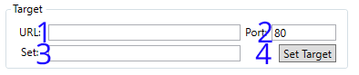| 1. URL or IP of target. "https://example.com" for example. | 2. Port to target. Find commonly used ports here |
| 3. The IP of target, when set (#4 pressed) | 4Set the target with URL or IP in #1 and the port in #2 |
Window Section #4
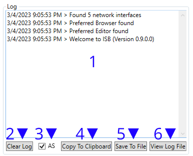| 1. Log Window. Will output messages and errors. | 2. Clears the log window (not the logfile) |
| 3. Toggles the automatic scrolling of the log window. | 4. Copies the log window to the clipboard. |
| 5. Saves the log window output to file (ISB log.log) | 6. Opens the logfile if one exists. |
Formatting: [date time a/P] > *([error title]:) [message]
*(conditional)Window Section #5
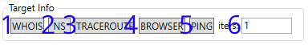| 1. Performs a WHOIS lookup on the target. | 2. Performs a DNS records lookup on the target. |
| 3. Performs a Traceroute on the target | 4. Opens the target in browser* |
| 5. Pings the target X times. (#6) | 6. X times to ping the target. (#5) |
*Browser used can be set in the editors (Section #7 of the window)
Window Section #6
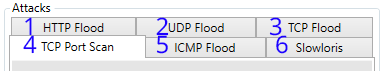| 1. Performs a HTTP Flood on the target. For usage information click here |
2. Performs a UDP Flood on the target. For usage information click here |
| 3. Performs a TCP Flood on the target. For usage information click here |
4. Performs a TCP Port Scan on the target. For usage information click here |
| 5. Performs a ICMP Flood on the target. For usage information click here |
6. Performs a Slowloris attack on the target. For usage information click here |
Window Section #6 Attack #1
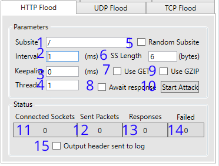| 1. Default: '/' Sets the subsite to use when GET (#7) is enabled* | 2. Set the interval (in milliseconds) between sending packets to target. |
| 3. Set the time (in milliseconds) for the target server to keep the connection open | 4. The amount of threads the application should use to attack the target |
| 5. Use a random subsite? The length of the random string can be changed in #6 | 6. Random Subsite (#5) Length in bytes Higher = slower (more data) / Lower = faster (more traffic) |
| 7. Use GET Protocol? Default is POST protocol. | 8. Should we wait for the server to respond to the last request sent? |
| 9. Should we declare GZIP encoding in our headers? 'Accept-Encoding: gzip, deflate' | 10. Starts/Stops the attack |
| 11. Sockets connected successfully | 12. Packets sent successfully |
| 13. Responses from target recieved (if #8 is set) | 14. Sockets/Packets that have failed to open/send |
| 15. Output headers sent to the log window?(Window Section #7)** |
*Example: '/search?q=' Used in conjunction with Random Subsite (#5) and Use GET (#7) will continually poll target with a random search query.
**When enabled; this will cause unresponsiveness and crashing of the application. It is a known issue. Please do not report it to support...
Window Section #6 Attack #2
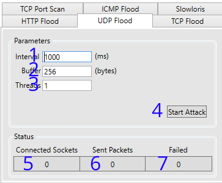| 1. Set the interval (in milliseconds) between sending packets to target. | 2. Sets the size of the buffer in the packet. |
| 3. The amount of threads the application should use to attack the target | 4. Starts/Stops the attack |
| 5. Sockets connected successfully | 6. Packets sent successfully |
| 7. Sockets/Packets that have failed to open/send |
Window Section #6 Attack #3
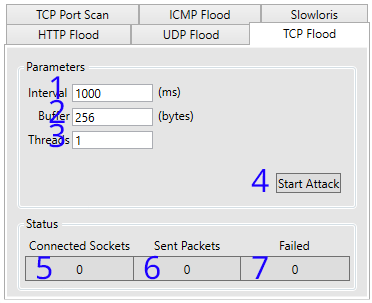| 1. Set the interval (in milliseconds) between sending packets to target. | 2. Sets the size of the buffer in the packet. |
| 3. The amount of threads the application should use to attack the target | 4. Starts/Stops the attack |
| 5. Sockets connected successfully | 6. Packets sent successfully |
| 7. Sockets/Packets that have failed to open/send |
Window Section #6 Attack(ish) #4
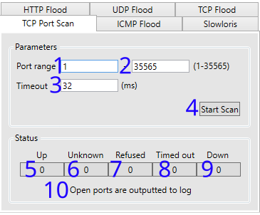| 1. The first port to scan (1-35565) | 2. The last port to scan (1-35565) |
| 3. The time to wait (in milliseconds) for a reply. | 4. Starts/Stops the scan |
| 5. Total ports OPEN | 6. Total ports 'uknown' error presumed DOWN |
| 7. Total ports 'refused' error presumed DOWN | 8. Total ports 'timed out' error presumed DOWN* |
| 9. Total ports DOWN | 10. Outputs "Port X UP" to log window (#4) |
Window Section #6 Attack #5
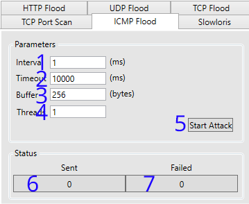| 1. Set the interval (in milliseconds) between sending packets to target. |
2. Sets the timeout of the current connection. |
| 3. Sets the size of the buffer in the packet. | 4. The amount of threads the application should use to attack the target |
| 5. Starts/Stops the attack | 6. Packets sent successfully |
| 7. Packets that have failed to send |
Window Section #6 Attack #6
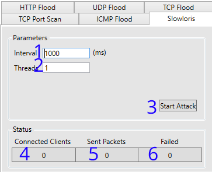| 1. Set the interval (in milliseconds) between sending packets to target. |
2. The amount of threads the application should use to attack the target |
| 3. Starts/Stops the attack | 4. Packets sent successfully |
| 4. Packets sent successfully | 6. Packets that have failed to send |
Window Section #7
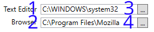| 1. Location path of the text editor. Defaults to system default from registry. |
2. Location path if the web browser. Defaults to system default from registry. |
| 3. Opens the File Dialog to pick the text editor used* | 4. Opens the File Dialog to pick the web browser used* |
*Accepts: exe, .exe, *.exe
Window Section #8
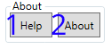| 1. Launches the 'Help' window. Keyboard Shortcut: F1 [Hint: Help window displays this page] |
| 2. Location the 'About' window Keyboard Shortcut: F2 |
Help Window > Window Section #8-1
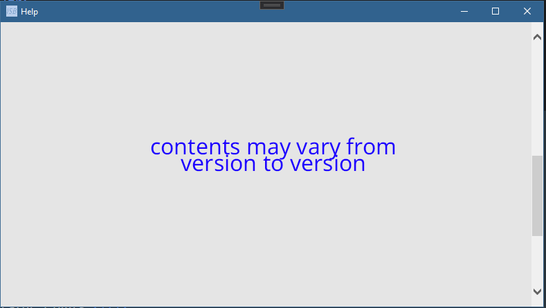*You are here... 50/50 shot of how you got here*
About Window > Window Section #8-2
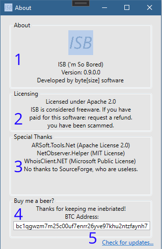| 1. Displays the Application name, Version, and Developer. |
| 2. Shows the licenses in use. Note: Usage of this software implies license agreement. |
| 3. Shows the packages used, and accredits those who help to develop/maintain ISB |
| 4. Shows the BTC address in which donations are accepted. Thanks! :) |
| 5. Opens browser to the application repository |
*You are here... 50/50 shot of how you got here*
Window Section #9
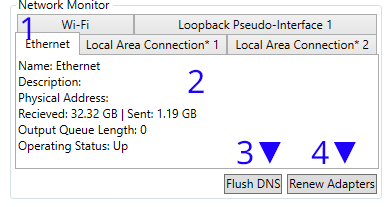| 1. The adapters detected by the monitor | 2. Current status of selected adapter |
| 3. Flushes DNS (Result outputs to log window) Executes: ipconfig.exe /flushdns |
4. Renews All Adapters (Result outputs to log window) Executes: ipconfig.exe /renew |
Click here for latest release.